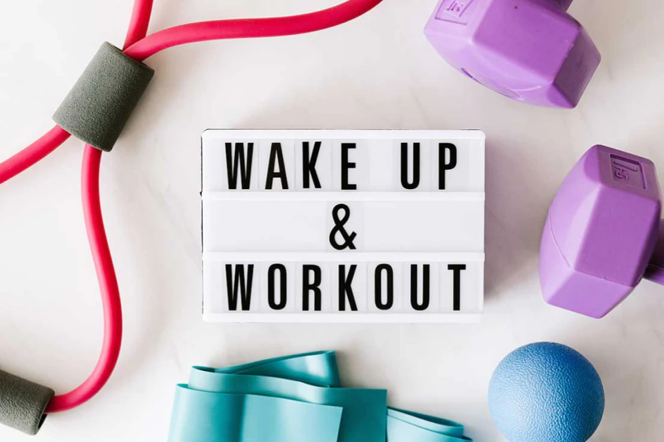

運動那麼好，我們一起努力堅持好嗎?

辦了健身房的會員卡，結果因為天氣、工作、身體等原因，會員卡都停滯半年了...
在FB曬跑步記錄，打了兩天卡就再也沒有了動靜...
一時心血下載了運動APP，點進去規劃了運動計畫後就擱置一旁...
“運動一天不難，難的是把它變成一種生活習慣”
1.生命在於運動
運動本身可以促進人體的內分泌變化，大腦在運動後會產生一種名為腦內啡的物質，人心情的好壞，同大腦內分泌出來的內啡肽的多少相關，運動可以刺激腦內啡的分泌，腦內啡因此也被稱為“快樂激素”或者“年輕激素”，它能讓人感到歡愉和滿足，甚至可以幫助人排遣壓力和不快。
2.運動有助於睡眠
據調查，因失眠而引起心臟病、高血壓、癡呆、猝死的概率是正常人的5-7倍，其中80%有3年以上的失眠病史，約50%失眠症患者伴有各種精神疾病。睡不著、睡不好，已成為當今流行的“公共疾病”，嚴重影響到人們的健康、工作、社交和生活品質，科學研究表明，適度的運動有助於改善失眠多夢的狀況，促進新陳代謝，增強體質，改善健康狀況。
3.控制體重 保持身材
目前肥胖及其相關代謝性疾病發病率呈逐年上升趨勢，成為危害健康的重要因素之一，久坐、運動不足的生活方式或高熱量飲食是影響健康的重要原因，因此，適當增加運動和控制飲食是防控這些疾病的基礎手段。
4.延遲衰老 延長壽命
隨著年齡的增長，人體的各項功能都會有所衰退，而堅持運動會增加肌肉量，令人年老也能依然有一個好體魄，並且運動能讓身體各系統功能衰退速度變慢，延長壽命，國外報導，人到中年後，堅持運動能將生理衰老推遲12年之久。
5.運動提高大腦機能提升智力
人們經常用“四肢發達，頭腦簡單”來形容運動的人，但其實愛運動的人頭腦一點都不簡單。運動不僅能增強人的體質，而且能促進大腦發育，改善和提高大腦機能，有助於智力開發，運動過程中，人們通過記憶運動的動作、要領，能夠增強人的記憶力。
影響運動堅持性的因素有哪些？
每個人都有享樂精神，天生懶惰與好吃，這兩者都是存在於屬於人類的"七宗原罪"裡面，屬於人性的根本。所以我們要更瞭解它，就為了在健身與運動中更好地發展自我。只有真正瞭解了“影響運動堅持性的因素”及“運動行為堅持的管理和干預”，才能更好更高效的堅持運動！